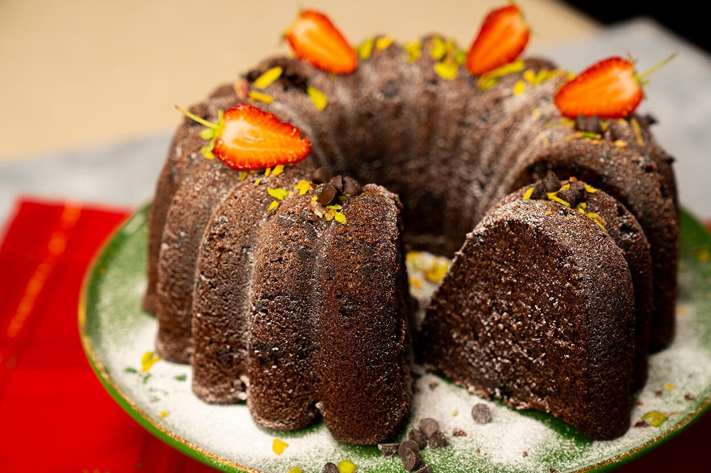

SADE KEK TARİFİ
Yumuşacık ve fırından eve yayılan o miss gibi kokusu ile anne
eli değmiş sade kek tarifini sizlerle paylaşıyorum.Yapımı oldukça kolay
ve evdeki malzemelerle hazırlayabileceğiniz muhteşem sade kek tarifini
denemenizi tavsiye ederim.
Tarif: Nefis Yemek Tarifleri Web Sitesinden
